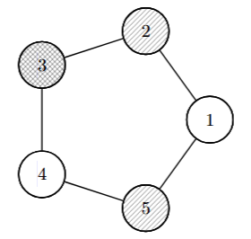

봄 축제 때 정보과학관에서는 아무 행사도 진행되지 않는다는 것에 화가 난 민성이는 정보과학관 입구 앞에서 직접 불꽃놀이 행사를 진행하려고 한다.
정보과학관 입구 앞에 폭죽을 설치할 수 있는 $$$N$$$개의 공간과, 서로 다른 두 공간을 연결하는 도화선 $$$N$$$개가 준비되어 있다.
$$$N$$$개의 공간은 도화선을 통해 모두 서로 연결되어 있다. 민성이는 도화선으로 직접 연결된 두 폭죽의 색이 다를 때 불꽃놀이가 아름답다고 생각한다. 하지만 불꽃놀이의 색의 종류를 늘리는 것은 비용이 많이 들기 때문에 최소한의 색을 사용하려고 한다. 아름다운 불꽃놀이를 만들기 위해 필요한 색의 개수의 최솟값을 구해보자.
첫째 줄에 공간의 개수 $$$N$$$이 주어진다.
둘째 줄부터 $$$N$$$개의 줄에 걸쳐 도화선이 연결하는 두 공간의 번호 $$$a,b$$$가 공백으로 구분되어 주어진다.
아름다운 불꽃놀이를 만들기 위해 필요한 폭죽 색 종류의 최솟값을 출력한다.
51 22 33 44 55 1
3
51 22 33 44 15 1
2
제한
$$$3\leq N\leq 200\, 000$$$
$$$1\leq a,b\leq N$$$
$$$N$$$개의 공간은 도화선을 통해 서로 연결되어 있다. 도화선은 서로 다른 두 공간을 연결하며, 다른 도화선이 같은 쌍을 연결하는 경우는 없다.
입력으로 주어지는 수는 모두 정수이다.

첫 번째 예시는 위 그림과 같이 3개의 색을 이용하면 아름다운 불꽃놀이를 만들 수 있고, 이보다 더 적은 색으로는 만들 수 없다.